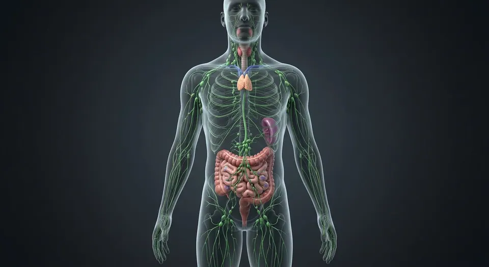
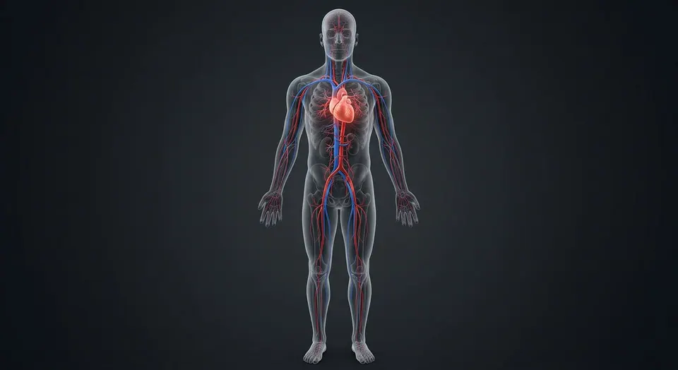

ORGAN → UNDER THE LENS
Marrow-cell teaching inset
Tap to compare the organ region with a tissue-level teaching illustration.
Read about Common myeloid progenitor ↓The hidden factory: red marrow makes two million blood cells per second; yellow marrow stores energy; both sit behind bone you see every day.
Cut long bone plus a cellular inset — the organs no eye ever sees without a microscope, highlighted here.
These are educational cutaways, not literal magnifications of an organ pixel or laboratory slides. A ring marks the approximate tissue region; part-specific lines appear only where identifiable.
Tap to compare the organ region with a tissue-level teaching illustration.
Read about Common myeloid progenitor ↓These 11 structures describe anatomy related to the chapter’s regional illustration. Each entry separates location, function and a clinical point.
Spongy bone of vertebrae, pelvis, sternum, epiphyses.
What it doesHaematopoiesis: all blood cell lines.
Clinical connectionMarrow failure = aplastic anaemia; infiltration = leukaemia.
Fat-filled shaft cavities of long bones.
What it doesEnergy store; convertible back to red marrow.
Clinical connectionReconverts in chronic anaemia or severe bleeding.
Latticework of struts along stress lines.
What it doesStrength at low weight; houses red marrow.
Clinical connectionOsteoporosis thins trabeculae first — vertebral fractures.
Dense osteon-based outer shell.
What it doesBending and torsional strength; calcium bank.
Clinical connectionCortical thickening responds to load (Wolff's law).
Cellular lining of all internal bone surfaces.
What it doesRemodelling: osteoblasts build, osteoclasts eat.
Clinical connectionPaget's disease is remodelling gone chaotic.
Pluripotent marrow stem cells.
What it doesGive rise to myeloid and lymphoid lines.
Clinical connectionStem-cell transplant replaces a diseased marrow.
Leaky capillaries new cells enter.
What it doesGateway for cells into circulation.
Clinical connectionMets (breast, prostate) seed marrow via these.
Multinucleated cell resorbing bone along endosteal surfaces.
What it doesRenews mineralized matrix with osteoblasts.
Clinical connectionOveractivity contributes to bone loss.
Former osteoblast embedded within mineralized lacuna.
What it doesSenses mechanical load and coordinates remodeling.
Clinical connectionNot a circulating blood cell.
Vessel entering bone shaft to supply medullary space and inner cortex.
What it doesProvides oxygen to marrow and bone.
Clinical connectionVascular injury can compromise bone viability.
Central canal of compact-bone osteon containing vessels and nerves.
What it doesSupplies concentric lamellae.
Clinical connectionDifferent from porous trabecular marrow spaces.
These 9 additional entries give anatomical context. They are deliberately not assigned a photographic pin on the regional image.
Marrow precursor downstream of haematopoietic stem cell.
What it doesGives rise to granulocyte, monocyte, erythroid and megakaryocyte lineages.
Clinical connectionLineage abnormalities appear in myeloid neoplasms.
Marrow precursor producing lymphocyte lineages.
What it doesSeeds B, T and natural-killer cell development.
Clinical connectionB-cell maturation largely begins in marrow.
Cluster of erythroid precursors around a central macrophage.
What it doesSupports red-cell development and iron handling.
Clinical connectionMarrow stress can alter erythroid proliferation.
Young enucleated erythrocyte retaining residual RNA.
What it doesMatures into circulating red blood cell.
Clinical connectionCount gauges marrow response to anemia.
Very large polyploid marrow cell beside sinusoidal spaces.
What it doesSheds platelets into circulation.
Clinical connectionLow production can cause thrombocytopenia.
Granulocytic maturation pathway from myeloblast through bands to segmented cells.
What it doesProduces rapid innate phagocytes.
Clinical connectionLeft shift reflects release of immature forms.
Nonhematopoietic support cells including fibroblastic and mesenchymal populations.
What it doesProvide niche signals and matrix.
Clinical connectionNiche disruption affects hematopoiesis.
Fat-storing stromal cell in yellow and mixed marrow.
What it doesContributes to marrow metabolic environment.
Clinical connectionMarrow fat increases with age in many sites.
Specialized discontinuous lining of marrow venous sinuses.
What it doesAllows mature blood cells to enter bloodstream.
Clinical connectionBarrier injury alters blood-cell egress.
Short answers grounded in the structures described above. Use the illustrated guide for anatomical context.
Red marrow supports blood-cell production. Yellow marrow contains more fat; distribution changes with age and differs across skeletal sites.
Most adult blood-cell production occurs in red marrow of axial bones and selected proximal long-bone regions.
Spongy bone of vertebrae, pelvis, sternum, epiphyses. Function: Haematopoiesis: all blood cell lines.
Latticework of struts along stress lines. Function: Strength at low weight; houses red marrow.
Function: Remodelling: osteoblasts build, osteoclasts eat. Cellular lining of all internal bone surfaces.
Follow these connected structures and body systems in the illustrated atlas.
 SkeletonThe frame: leverage for muscle, armour for viscera, a calcium bank, and the marrow factory that makes every blood cell.↗
SkeletonThe frame: leverage for muscle, armour for viscera, a calcium bank, and the marrow factory that makes every blood cell.↗
Lymphatic systemThe body's drainage and defence network: interstitial fluid returns as lymph, filtered node by node, while immune cells patrol.↗
Vascular systemTwo trees from one pump: arteries deliver under pressure, veins return against gravity — with valves, shunts and plexuses throughout.↗General anatomy references and related source chapters for continued study. These links do not make the digital illustrations clinical images or certify every anatomical variant.
This educational page is not medical advice and has not undergone formal clinical peer review. Spotted an error? Contact the editor.
Open the realistic interactive plate, label lines, focus view and self-test.